Deepseek-R1本地部署过程
最近很多人都在研究本地大模型的部署，我也来踩个坑，其实部署方式很简单，本篇主要记录了本地部署和本地图形化UI工具的部署过程
访问https://ollama.com/download下载ollama
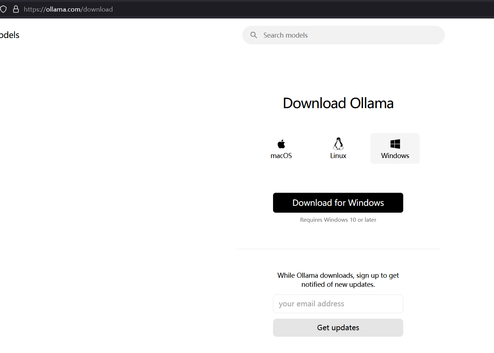
下载完成后进行默认安装，之后任务栏里会出现托盘图标
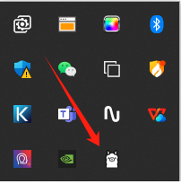
起一个新的CMD窗口看看是否已经自动配好了环境变量
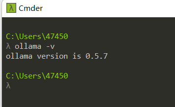
接下来确定一下本地的GPU版本，可以用一些工具如GPU-z等，我用了MATLAB自带的gpuinfo进行查看，我的GPU型号为NVIDIA RTX 3080Ti，有点老了，毕竟电脑用了好多年了已经
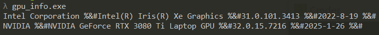
以下为网上找的一个适配版本的图，可以参考一下自己的GPU能够跑哪些版本的模型
如果已经可以正常使用，就可以通过以下命令进行安装，稳妥起见用了1.5b，如果用7B其实也问题不大，经测试如果让显卡能烤地瓜的话8B也能跑，别说是我说的
ollama run deepseek-r1:1.5b
安装完成后如下图，可以直接提问，且响应速度还挺快的
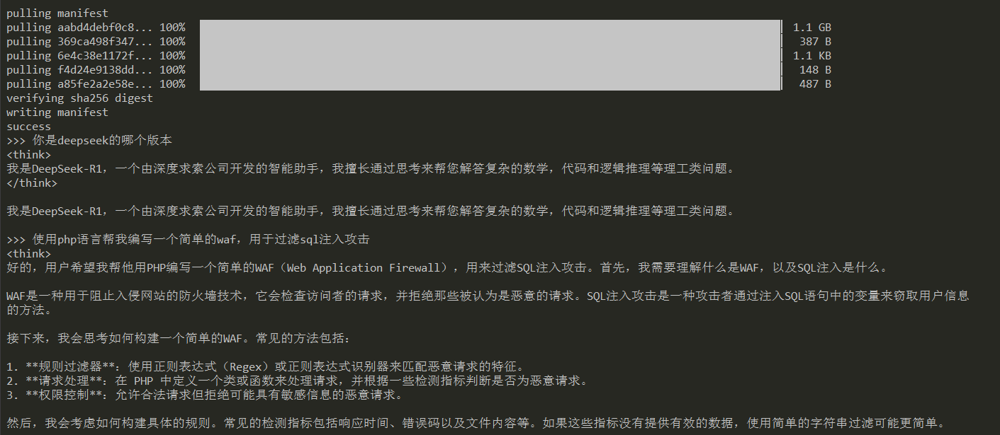
接下来配置一下本地UI，使用chatbox这个工具进行，地址为https://chatboxai.app/zh
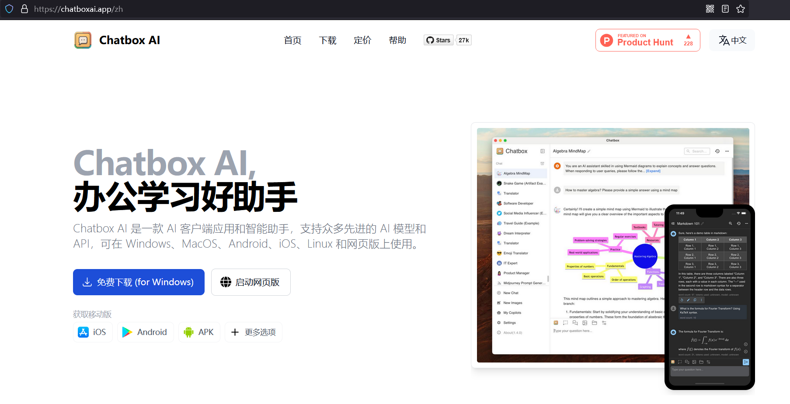
安装完成后进行配置，首先创建OLLAMA的环境变量，确保能够访问到服务
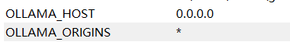
然后再chatbox中进行配置
选择ollama的API
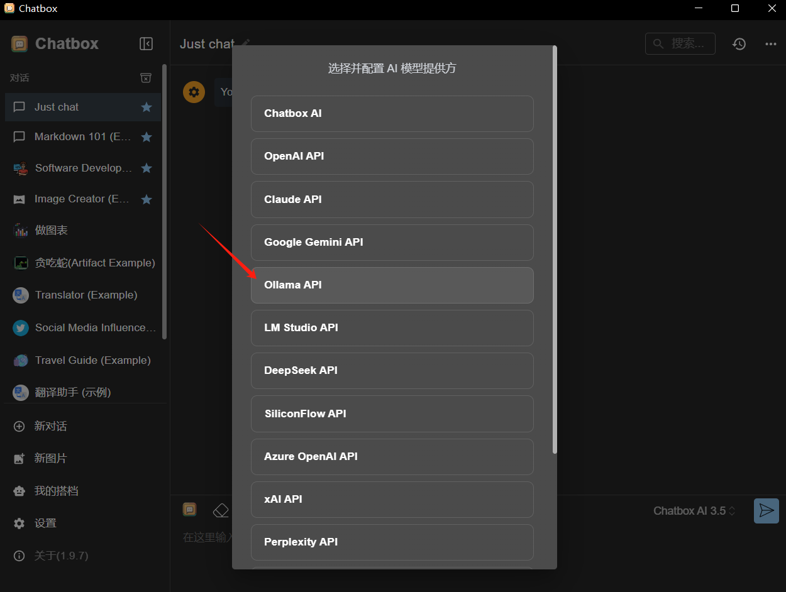
选择本地模型
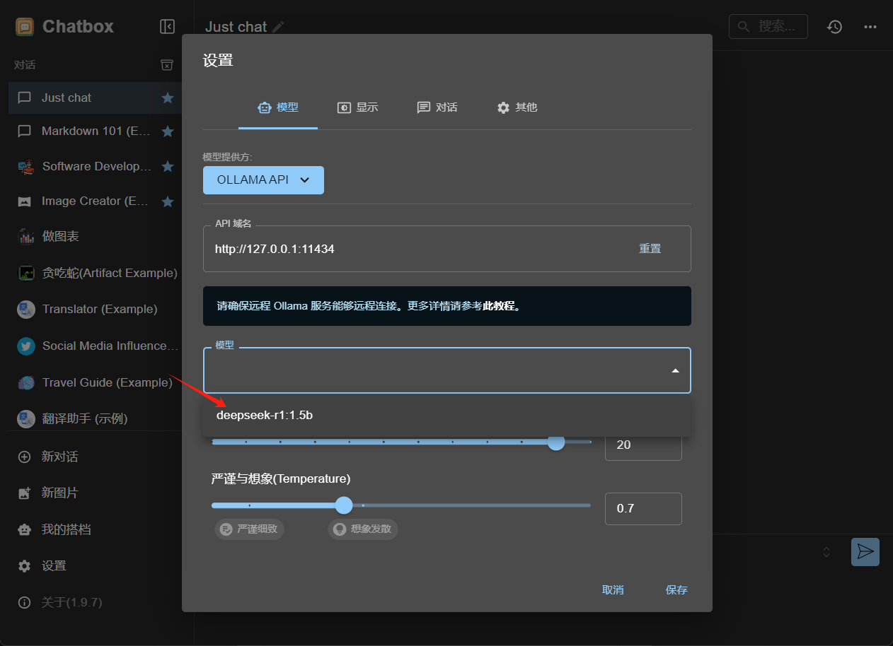
此时已经成功连接了本地的ollama
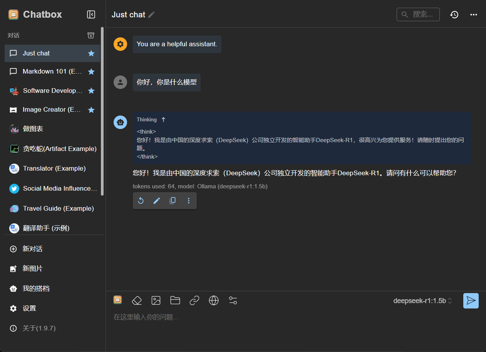
这时候一些简单的东西在无互联网连接的情况下也能正常回答，非常流畅可以说是
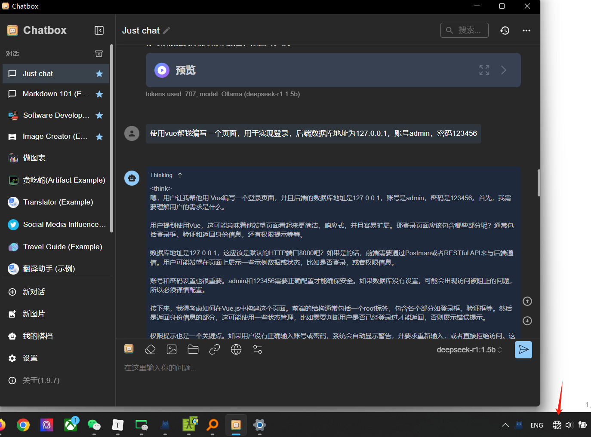